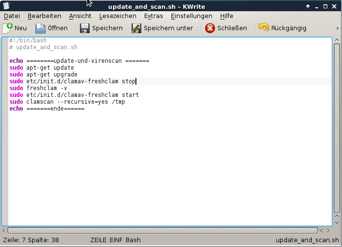
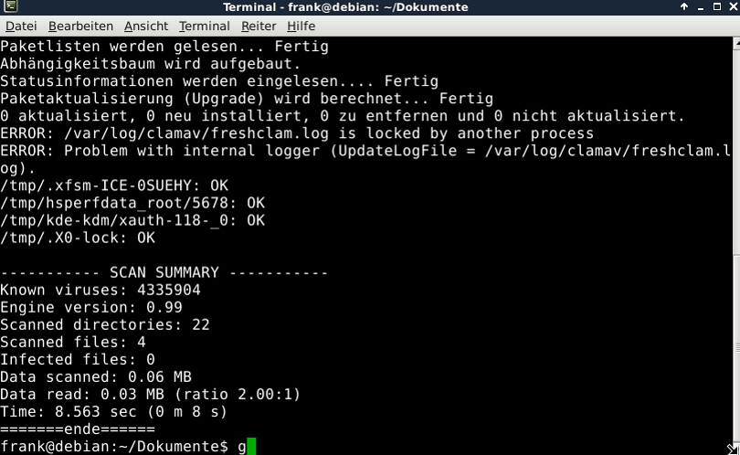
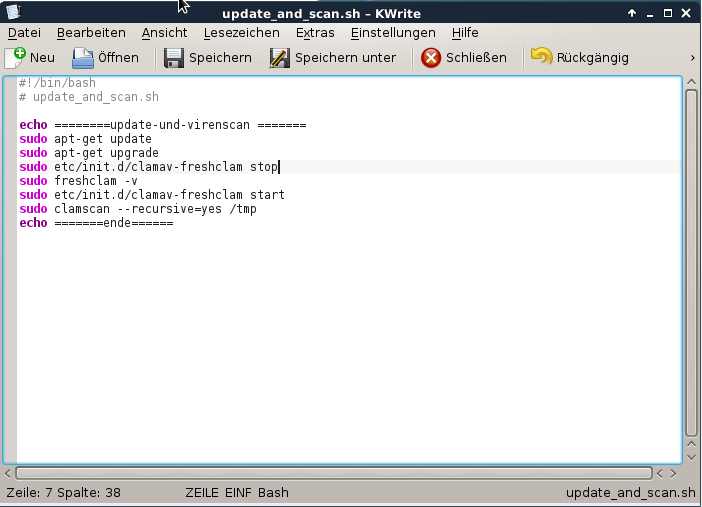
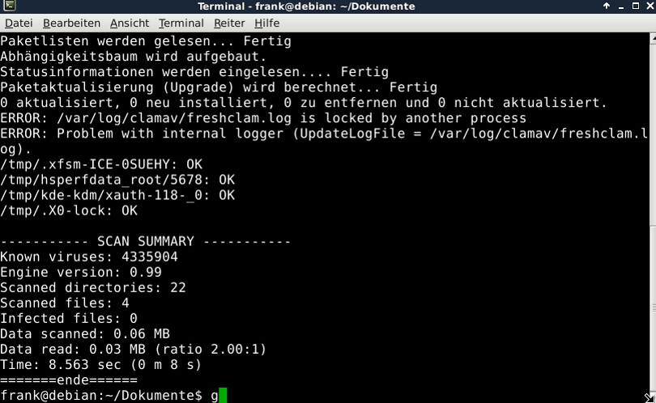

a)
# echo ========update-und-virenscann=========
# sudo apt-get update
#sudo apt-get upgrade
b)
# sudo freshclam
c)
# sudo clamscan -r /tmp
echo ===========ende==========
d) im Terminal
./verzeichnis/update_and_scan.sh
eingeben
Das Komplette Skript:

Das Ergebniss des Skriptes:

Ein Video der Ausführung:

Das Ergebniss des Skriptes:

Ein Video der Ausführung: